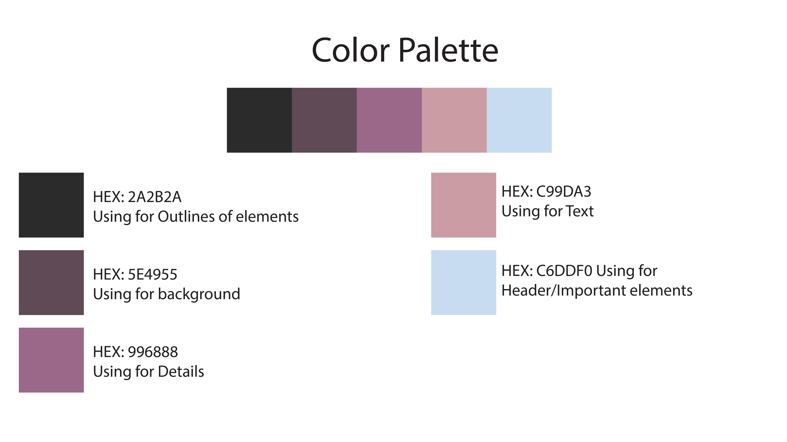

For my design of my website, I wanted to use a colorful palette that I think reflects my personality. For a closer look at the colors I chose you can review the photo below. Please use this link to examine the wireframes of my website.You can see my intention with the accesibility of the website and the use of scrolling.
